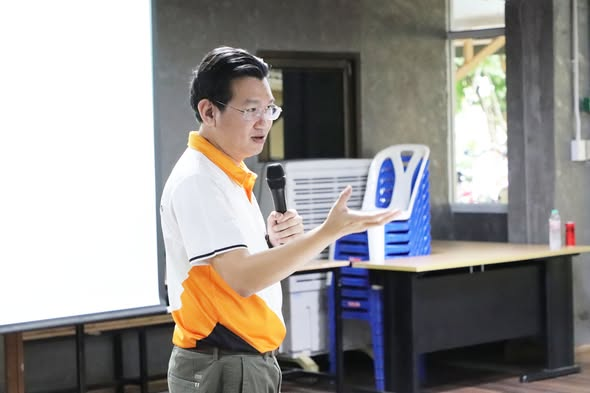
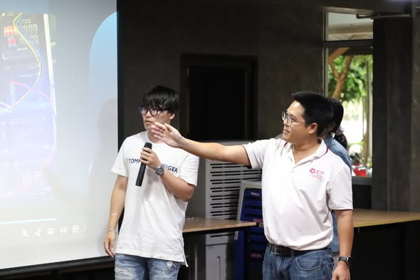
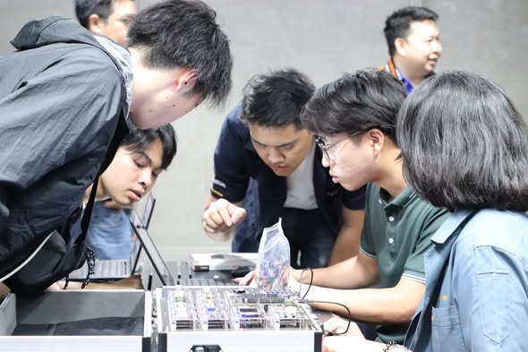
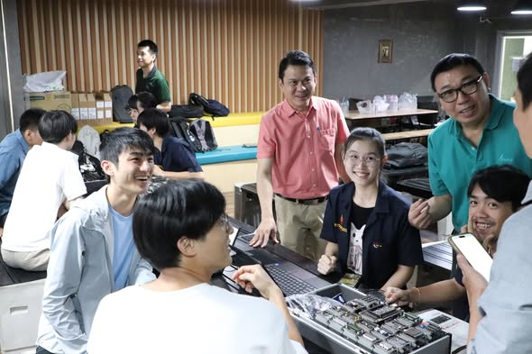
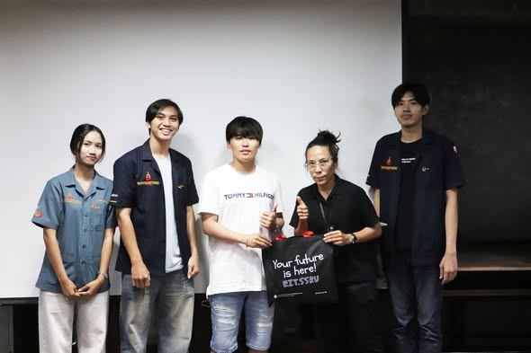

วันที่ 22 สิงหาคม 2568 ณ ห้องกิจกรรม อาคาร 42 คณะวิศวกรรมศาสตร์และเทคโนโลยีอุตสาหกรรม มหาวิทยาลัยราชภัฏสวนสุนันทา
วันที่ 22 สิงหาคม 2568 คณาจารย์และนักศึกษา สาขาวิชาวิศวกรรมหุ่นยนต์ สาขาวิชาวิศวกรรมคอมพิวเตอร์ และ สาขาวิชาเทคโนโลยีไฟฟ้า คณะวิศวกรรมศาสตร์และเทคโนโลยีอุตสาหกรรม ได้ร่วมจัดกิจกรรม MCU Multi Arduino Workshop ให้กับนักศึกษาจากมหาวิทยาลัยชิบะ ประเทศญี่ปุ่น
กิจกรรมดังกล่าวจัดขึ้นภายใต้ความร่วมมือทางวิชาการระหว่าง มหาวิทยาลัยราชภัฏสวนสุนันทา (SSRU) และ มหาวิทยาลัย Chiba (Chiba University) ประเทศญี่ปุ่น ณ ห้องกิจกรรม อาคาร 42 คณะวิศวกรรมศาสตร์และเทคโนโลยีอุตสาหกรรม มหาวิทยาลัยราชภัฏสวนสุนันทา

ขยายภาพ 1/5ปิดภาพ ×
2/5ปิดภาพ ×
3/5ปิดภาพ ×
4/5ปิดภาพ ×
5/5 (+35)ปิดภาพ ×